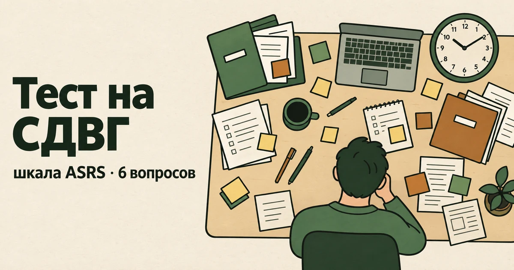

Главная → Тесты → Тест на СДВГ
Тест на СДВГ у взрослых (шкала ASRS)
Обновлено: 09.09.2026 · 2 минуты на прохождение
Это тест на СДВГ у взрослых по шкале ASRS — короткому скринингу из шести вопросов, разработанному при участии Всемирной организации здравоохранения. Он не ставит диагноз и не измеряет «степень СДВГ»: его единственная задача — показать, набралось ли достаточно характерных признаков, чтобы разговор со специалистом был оправдан. Бесплатно, без регистрации, ответы остаются в вашем браузере.

Что с этим делать дальше. Балл — не диагноз, а точка отсчёта: смысл он приобретает в динамике, когда видно, растёт он или падает. В приложении AI Therapist есть дневник состояния, упражнения на основе приёмов КПТ и разговор с ИИ-психологом — можно пройти шкалу повторно через пару недель и сравнить.
Что показывает шкала ASRS
ASRS (Adult ADHD Self-Report Scale) создана в 2005 году исследовательской группой под руководством Рональда Кесслера совместно с рабочей группой ВОЗ по СДВГ у взрослых. Полная версия состоит из восемнадцати пунктов, а эти шесть — её скрининговая часть: именно они оказались лучше всего предсказывающими диагноз, поэтому в мире используется обычно короткий вариант.
Шесть вопросов покрывают два разных механизма. Первые четыре — про внимание и организацию: доведение дел до конца, порядок в задачах, память на встречи и то самое откладывание задач, которые требуют размышления. Последние два — про двигательное беспокойство: ёрзание при долгом сидении и ощущение «внутреннего мотора». Такой набор неслучаен: у взрослых гиперактивность обычно уходит внутрь, и внешне заметных признаков остаётся мало.
Важно, чего в шкале нет. В ней нет вопросов про детство, хотя начало симптомов до 12 лет — обязательное условие диагноза. Нет вопросов о том, насколько всё это мешает жить, хотя без нарушения функционирования диагноз тоже не ставят. И нет ничего, что отделяло бы СДВГ от депрессии, тревоги, выгорания или хронического недосыпа, которые дают очень похожую картину. Поэтому ASRS — это фильтр на входе, а не заключение.
Как считается результат
Подсчёт у ASRS устроен непривычно: баллы не складываются. В бумажном бланке часть клеток затенена, и результат — это просто количество ваших ответов, попавших в затенённую область. У первых трёх вопросов засчитываются ответы «иногда», «часто» и «очень часто», у последних трёх — только «часто» и «очень часто». Отсюда шкала от 0 до 6.
Порог один и тоже задан авторами: четыре отметки и больше означают, что симптомы могут соответствовать СДВГ у взрослых и есть смысл пройти обследование. Ниже четырёх — скрининг не сработал. Никаких «лёгкой» и «тяжёлой» степени шкала не различает, и попытки вывести их из числа отметок — самодеятельность.
Мы воспроизводим этот подсчёт без изменений: варианты ответа на странице подобраны так, чтобы результат совпадал с бумажным бланком клетка в клетку.
Что делать с результатом
Если отметок четыре и больше. Это не диагноз и не повод для паники: скрининг устроен так, чтобы скорее перестраховаться, чем пропустить, и часть людей с высоким результатом СДВГ не имеет. Разумный следующий шаг — записаться к психиатру и подготовиться к приёму: собрать школьные воспоминания и документы, спросить у родителей, каким вы были ребёнком, и записать, где именно трудности мешают сейчас — на работе, дома, в отношениях. Как устроен этот приём и почему в России он выглядит не так, как в переводных статьях, разобрано в большом разборе СДВГ у взрослых.
Если отметок меньше четырёх. СДВГ маловероятен — но если жить всё равно тяжело, доверяйте не цифре, а своей жизни. Похожие трудности с концентрацией и «не могу начать» дают выгорание, депрессия, тревога, хронический недосып и апноэ, дефицит железа или B12, проблемы со щитовидной железой. Проверить соседние версии можно свободными шкалами: PHQ-9, GAD-7, CBI.
Чего этот тест не может
- Поставить диагноз. СДВГ диагностируется в беседе с врачом, с разбором истории с детства и нескольких сфер жизни, часто — с расспросом близкого человека. Шесть вопросов этого не заменяют.
- Отличить СДВГ от похожего. Человек в тяжёлом выгорании или после полугода недосыпа легко наберёт четыре отметки и больше.
- Учесть детство. Без признаков, существовавших до 12 лет, диагноз не ставят, а шкала об этом не спрашивает вовсе.
- Измерить тяжесть. Шесть отметок не «хуже», чем четыре: порог здесь один, а не шкала выраженности.
- Заменить наблюдение. Ответы зависят от того, какой сейчас период жизни; результат месячной давности не обязан повториться.
Если результат вас встревожил или, наоборот, запутал — можно разобрать его вслух: что именно у вас происходит, с чего начать и как подготовиться к приёму. Анонимно и без регистрации.
Частые вопросы
Насколько точен тест на СДВГ по шкале ASRS?
ASRS — валидированный скрининговый инструмент, разработанный при участии ВОЗ, и для короткой шестипунктовой формы это очень хороший результат. Но скрининг по своей задаче настроен скорее перестраховываться: он старается не пропустить человека с СДВГ ценой того, что часть людей без него тоже перейдёт порог. Поэтому четыре отметки и больше — это повод обследоваться, а не основание считать вопрос решённым. И наоборот: результат ниже порога не отменяет ваших трудностей, он лишь говорит, что характерных для СДВГ признаков набралось мало.
Можно ли поставить себе диагноз СДВГ по этому тесту?
Нет, и ни по какому другому онлайн-тесту тоже. Диагноз СДВГ ставит психиатр после беседы, в которой обязательно разбирается детство: несколько признаков должны были проявляться до 12 лет. Кроме того, врач исключает состояния, дающие похожую картину, — депрессию, тревожные расстройства, последствия недосыпа, нарушения щитовидной железы, действие лекарств. Результат этого теста полезно принести на приём: он экономит время, но заключением не является.
Почему в тесте всего 6 вопросов, а не 18?
Полная шкала ASRS состоит из восемнадцати пунктов, повторяющих диагностические критерии. Шесть вопросов, которые вы прошли, — её скрининговая часть: при разработке именно они лучше всего предсказывали наличие диагноза, поэтому в практике обычно используется короткая форма. Полные восемнадцать пунктов нужны специалисту для описания картины симптомов, а не для ответа на вопрос «идти ли к врачу».
Что делать, если результат ниже порога, но мне тяжело?
Доверять своей жизни, а не цифре. ASRS проверяет один конкретный набор признаков и легко проходит мимо всего остального. Трудности с концентрацией, забывчивость и невозможность начать дело дают выгорание, депрессия, тревога, хронический недосып и апноэ, дефициты железа и B12, проблемы со щитовидной железой. Разумно проверить соседние версии свободными шкалами PHQ-9, GAD-7 и CBI, а если тяжело давно — обратиться к специалисту независимо от результата любого теста.
Тест сохраняет мои ответы?
Нет. Подсчёт целиком происходит в вашем браузере, ответы никуда не отправляются и нигде не сохраняются. Регистрация не нужна, результат виден только вам, и, закрыв страницу, вы его теряете — если он нужен для приёма у врача, сделайте скриншот.
Материал подготовлен командой AI Therapist. Мы используем шкалу ASRS v1.1 в её общепринятом виде: формулировки пунктов, варианты ответа и правило подсчёта воспроизведены без изменений, порог в четыре отметки задан авторами шкалы. ASRS-v1.1 © Всемирная организация здравоохранения, 2003; правообладатель указывает, что шкала может использоваться свободно и не требует формального разрешения. Страница носит просветительский характер, не является диагностическим заключением и не заменяет консультацию врача: диагноз СДВГ ставит только психиатр.
Источники: Kessler R. C. et al. «The World Health Organization Adult ADHD Self-Report Scale (ASRS): a short screening scale for use in the general population», Psychological Medicine, 2005, NHS — ADHD in adults, NICE NG87 — Attention deficit hyperactivity disorder: diagnosis and management, NIMH — ADHD: What You Need to Know.
Кто отвечает за содержание сайта и по каким правилам мы готовим материалы — на странице о проекте.